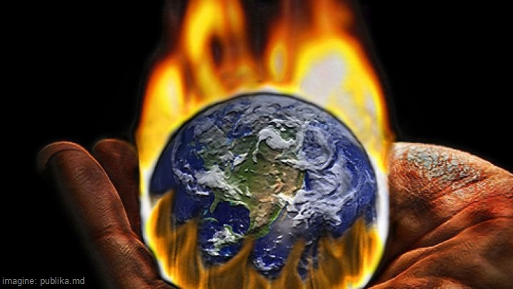
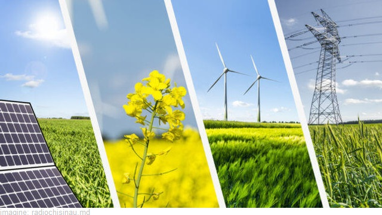
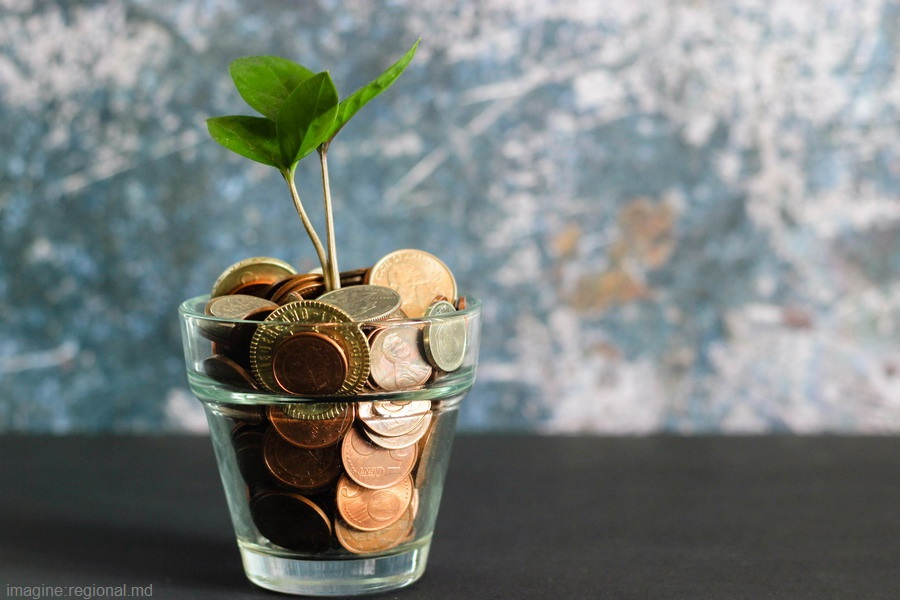
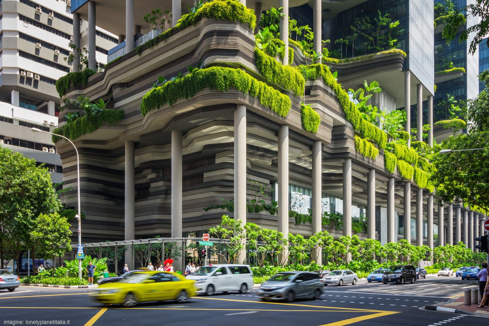
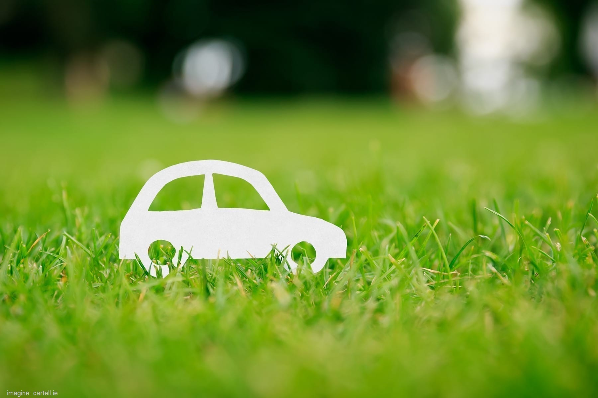
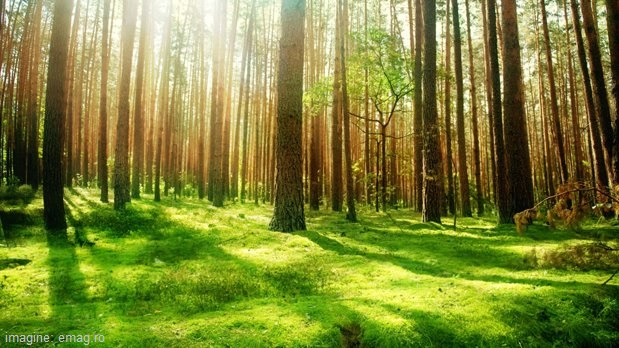
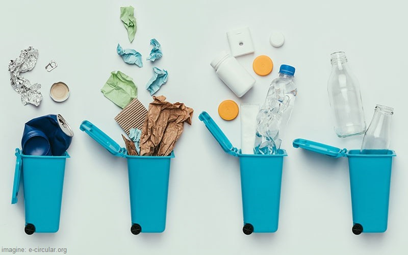

Efectele încălzirii globale dăunează deja oamenilor din întreaga lume.Acum, climatologii au ajuns la concluzia că trebuie să limităm încălzirea globală la 1,5°C până în 2040 dacă vrem să evităm un viitor în care viața de zi cu zi din întreaga lume este marcată de efectele sale cele mai grave și devastatoare: seceta masivă, incendii, inundații, furtunile și alte dezastre la care ne referim în mod colectiv drept schimbări climatice. Sunt adesea un factor cheie al sărăciei, strămutarea, foamea și tulburările sociale.


Pentru a preveni schimbările climatice, trebuie să ne îndepărtăm de combustibilii fosili, surse regenerabile de energie, cum ar fi energia solară, eoliană, biomasă și energia geotermală.

Generarea de energie curată este esențială, dar reducerea consumului de energie și apă prin utilizarea unor dispozitive mai eficiente (de exemplu, lumini LED, sisteme de duș inovatoare) este mai puțin costisitoare și la fel de importantă. Pentru a încetini încălzirea globală, trebuie să învățăm să folosim resursele cu moderație.

Pentru a reduce emisiile de CO₂ din clădiri cauzate de încălzire, aer condiționat, apă caldă sau iluminat, atât clădirile noi cu consum redus de energie trebuie construite, cât și cele existente remodelate. Izolarea termică de bază și încălzirea controlată vor reduce emisiile de CO₂, precum și facturile la utilități.

Transportul durabil este un mijloc de transport care are un impact redus asupra mediului. Este denumit în mod obișnuit „transport verde” deoarece folosește energie regenerabilă mai degrabă decât petrol sau alți combustibili fosili care pot afecta negativ terenul.

Stimularea utilizării mai raționale a resurselor naturale, oprirea defrișărilor pe scară largă și îmbunătățirea respectării mediului iar eficiența agricolă trebuie să fie, de asemenea, o prioritate.

Adoptarea obiceiurilor de consum responsabil este esențială, fie că este vorba despre alimente, îmbrăcăminte, cosmetice sau produse de curățare. Eliminarea este o necesitate absolută pentru gestionarea deșeurilor.